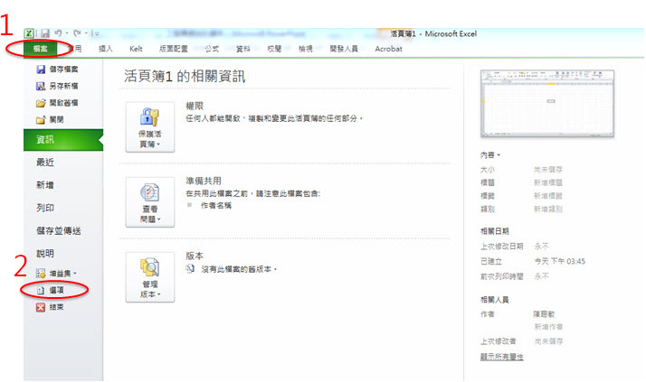
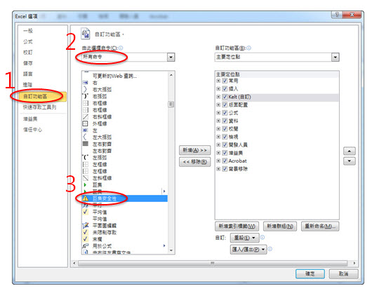
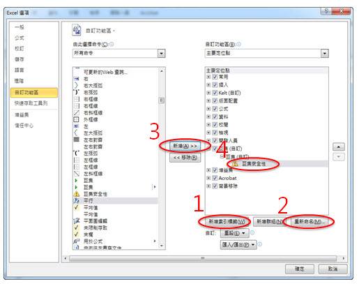
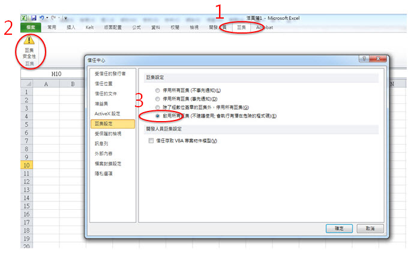
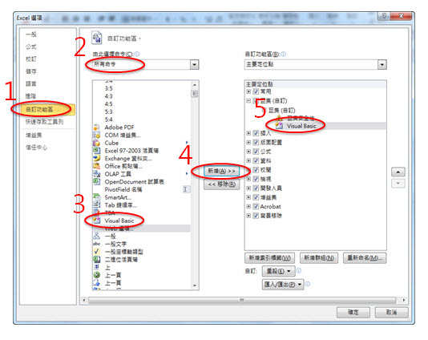
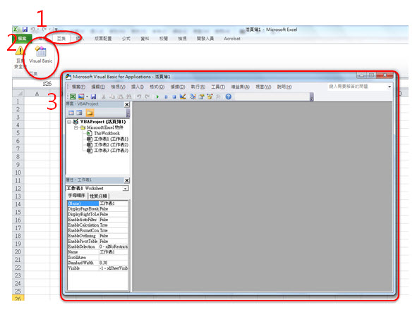
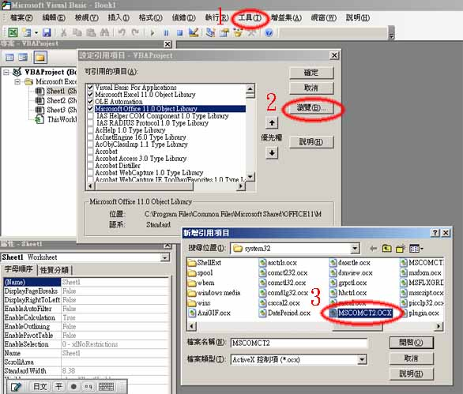

1.選擇Excel[檔案]中的 [選項]

2.因為Excel 2007與Excel 2010預設將VBA隱藏，需從[自訂功能區]將VBA設定到操作面版中，先從[所有命令]中選擇巨集安全性

3.新增索引標籤"巨集"，將"巨集安全性"移到"巨集"中

4.一旦完成變更，就可以在操作面版上看到"巨集安全性"的按鈕，接下來將巨集安全等級改為"啟用所有巨集"就完成了

2.將這2個檔案儲存到Windows元件目錄中:Windows 32bit存到c:/windows/system32/中，Windows 64bit存到c:/windows/syswow64/中
3.若使用系統出現無法[正確顯示操作元件]的錯誤訊息，這是因為使用者的Excel檔尚為引用上述元件，請不要關閉檔案，依照下列步驟進行設定即可：
4.首先，一樣把需從[自訂功能區]將"Visual Basic Editor"放到操作面版中

5.然後從操作面版進入"Visual Basic Editor"中

6.在工具→設定引用項目，選取剛剛存入的元件c:/windows/system32/MSCOMCT2.OCX及c:/windows/system32/MSCOMCTL.OCX就可正常取用月曆物件及Lisiview了。
